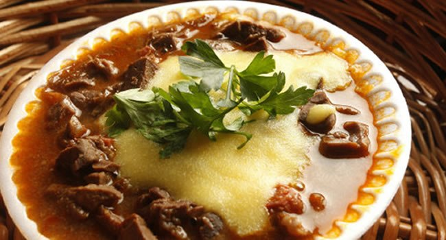

Angu

INGREDIENTES.
- 02 Litros de Água Fervendo.
- 500g de Fubá.
PORÇÕES.
Servir 15 Pessoas.
TEMPO DE PREPARO.
40 minutos.
PASSO A PASSO.
- Dissolva o fubá num pouco de água fria, mexendo com colher de pau.
- Junte a água fervendo e, mexendo sem parar, em fogo alto.
- Quando a massa começar a grudar no fundo da panela, reduzir a chama e continuar a mexer até soltar do fundo da panela.
- Molher uma forma e coloque o angu.
- Deixar esfriar um pouco e virá-lo numa travessa.
Página Inicial.